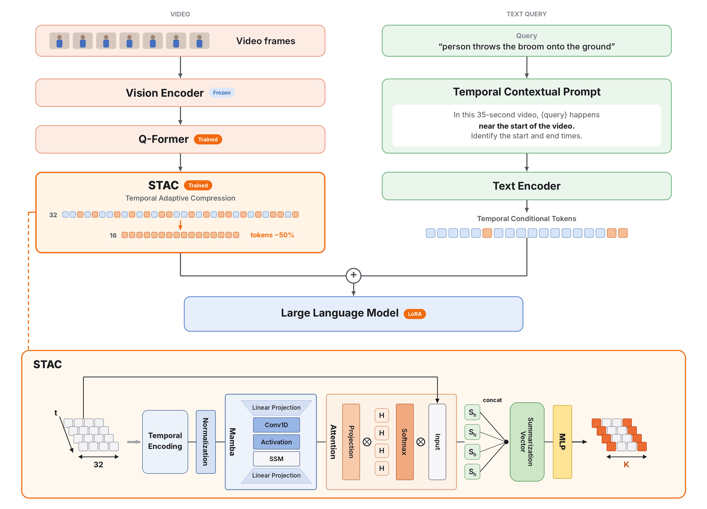
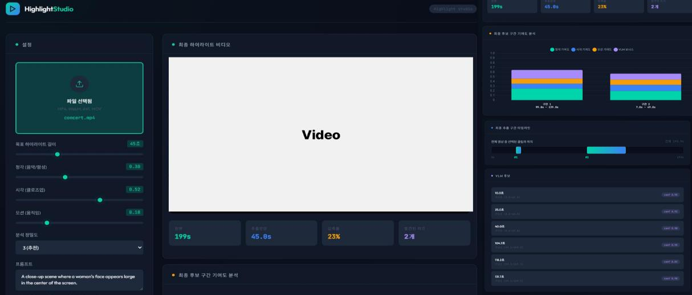

비디오 시간 구간 탐색(Video Moment Retrieval)을 연구하며
‘대표 프레임 선택 → 자연어 시간 맥락 표현 → 비디오 표현 압축’으로 문제를 단계적으로 확장했고, 학술 성과 3건을 달성했습니다.
산학 과제에서는 공연 영상 하이라이트 탐색 파이프라인 구현을 담당했으며,
과제에서 확인한 하이라이트 장면이 중간에 끊기는 문제를 다중 시계열 신호 융합과 E2E 프로토타입 개발 후속 개인 프로젝트로 확장했습니다.
사전학습된 VLM(Video-Language Model) VideoLLaMA 2 기반 하이라이트 파이프라인 구현 및 평가
Qwen2.5-Omni가 제안한 의미 후보 및 오디오, 얼굴 감지, 모션 시계열 신호 융합 E2E 전체 프로토타입 구현
비디오에서 자연어 질의에 해당하는 시작과 종료 시점을 찾아내는 태스크

BLIP-2는 각 프레임을 중첩된 시퀀스로 처리하기 때문에, 영상의 흐름을 반영하는 방식을 채택했습니다.
텍스트 중심으로 사전학습된 LLM은 숫자형 시간 정보보다 자연어로 표현된 범주형 정보를 더 효과적으로 활용할 것이라는 가설을 세웠습니다.
선행 연구의 한계를 바탕으로 정밀한 시간 관계 학습과 LLM 입력 토큰 수 감축이라는 두 방향을 종합해 모듈을 구축했습니다.
(a) 최종 성능 비교 — Charades-STA Test
| 구성 | Backbone | mIoU | R1@0.5 | R1@0.7 |
|---|---|---|---|---|
| QD-DETR | SF+CLIP | – | 57.31 | 32.55 |
| CG-DETR | SF+CLIP | 50.13 | 58.44 | 36.34 |
| UnLoc-L | CLIP* | – | 60.80 | 38.40 |
| EaTR | I3D | – | 68.47 | 44.92 |
| Mr.BLIP | BLIP-2 | 58.63 | 69.31 | 49.29 |
| Ours (+TCP) | BLIP-2 | 62.41 | 70.16 | 44.06 |
| Ours (+TCP/STAC) | BLIP-2 | 62.81 | 71.96 | 46.64 |
(b) 압축 방법 비교
| Method | mIoU | R1@0.5 | R1@0.7 |
|---|---|---|---|
| STAC | 30.2 | 34.3 | 17.1 |
| ToMe | 28.2 | 31.7 | 16.2 |
| TokenLearner | 22.1 | 25.2 | 13.2 |
성과 정리
1×A6000 19시간 학습으로 4×A100 55시간 환경의 비교 모델(Mr.BLIP)보다 향상
시간 축 압축으로 ToMe · TokenLearner보다 모든 정확도 지표에서 높은 성능
ToMe 대비 연산량과 추론 시간을 함께 절감
정밀한 경계 탐지는 비교 모델보다 낮아 개선 과제로 남음
공연 영상에서 편집자가 활용할 만한 장면을 자동으로 찾는 문제를 다뤘습니다. 산학 과제에서 VLM 기반 파이프라인을 구현하며 하이라이트 장면이 중간에 끊기는 한계를 확인했고, 과제 종료 후 개인 연구에서 의미 정보와 오디오 · 얼굴 · 움직임 신호를 융합한 E2E 프로토타입으로 확장했습니다.
하이라이트 판단 기준이 인물 중심의 화면 구성과 음향 고조로 나뉘어, 한쪽 기준만으로는 근거 있는 합의 도출이 어려움
기존 파이프라인은 영상과 텍스트만 처리해 음향 기준을 점수로 반영 불가
→ 오디오까지 다루는 모델 교체와 파이프라인 재구성 필요
3분 영상을 한 번에 입력하면 후보가 앞부분에 편중
→ 사전학습 데이터가 1분 내외인 점이 원인으로 추정
AI 모델은 의미적으로 중요한 장면은 찾지만, 실제 편집처럼 앞뒤 맥락이 이어지는 정확한 구간을 잡기에는 한계가 있었습니다. 그래서 초 단위로 측정한 오디오 · 얼굴 · 움직임 신호와 AI의 의미 후보를 함께 활용하는 6단계 파이프라인을 구성했습니다.

3분 공연 영상 · GT: 실제 방송 편집본 · 그림은 대표 사례 1편
대체로 예측 구간 중 2개 이상이 실제 편집 구간 안에 위치해 의미 있는 장면은 잘 찾았습니다. 다만 구간이 서로 끊겨 있어, 이를 하나의 연속된 하이라이트로 잇는 신호 융합과 후처리의 필요성을 도출했습니다.
3분 공연 영상 1편 · GT: 원본 대비 편집본의 실제 사용 구간
의미 분석과 다중 신호(오디오 · 얼굴 · 움직임) 융합으로 실제 편집 구간에 근접한 연속 하이라이트를 생성했습니다.
얼굴 신호에 가장 큰 가중치를 부여하고 ‘클로즈업된 장면 중심’ 프롬프트를 입력해, 인물의 얼굴이 크게 보이는 장면이 집중적으로 반영된 하이라이트를 출력했습니다.
산학 과제와 개인 연구는 서로 다른 영상으로 수행되어 결과를 직접 비교하지 않았으며, 각 사례에 대한 정성적 검증입니다. 개인 연구에서는 산학 과제 데이터 대신 별도의 공개 영상을 사용했으며, 포트폴리오에는 영상 원본 및 생성 결과를 포함하지 않았습니다.